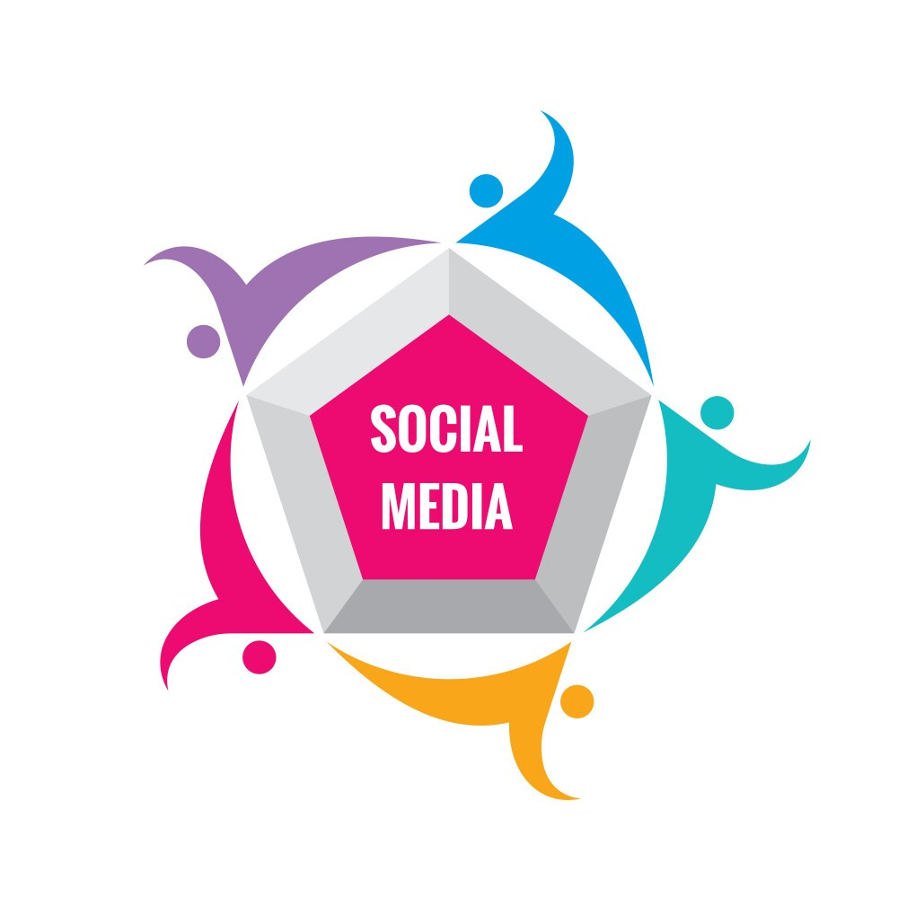

Mari Terhubung
Hubungi saya jika ada pertanyaan, ide kolaborasi, atau sekadar ingin menyapa melalui platform di bawah ini.

Hubungi saya jika ada pertanyaan, ide kolaborasi, atau sekadar ingin menyapa melalui platform di bawah ini.